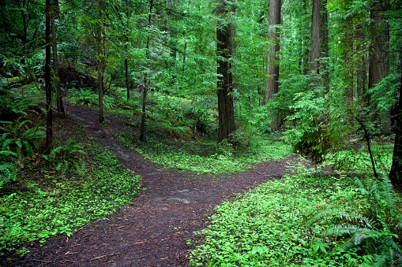
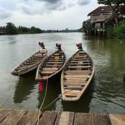
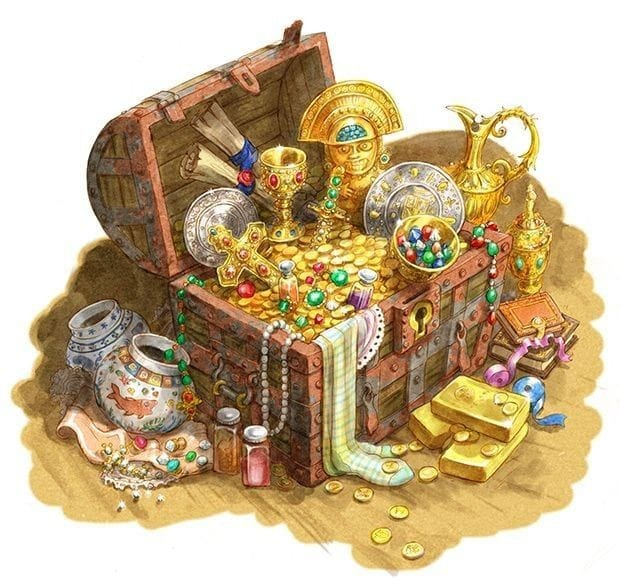

João encontra um mapa misterioso em sua casa João decide seguir o mapa?
Fim(João guarda o mapa e volta para a cama)

João encontra uma bifurcação no caminho, para onde ele vai?

João usa o barco para atravessar o riacho?
João morre após acordar o urso adormecido que estava com muita fome.

João tenta abrir o tesouro com medo da situação?
João chega em casa em segurança mas sem o tesouro.

João consegue abrir o báu e volta para casa com a fortuna que há nele completamente feliz!!
O baú permanece fechado e João retorna sem nada.